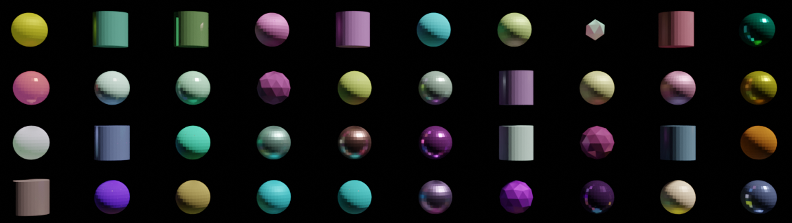
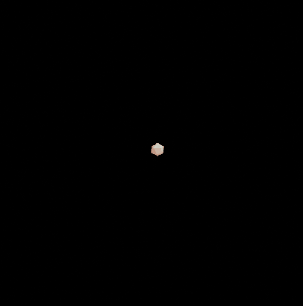

ONGOING
Random object generation in Blender
about
With this project I wanted to explore how to generate random oobjects in Blender following a tutorial on Youtube (Refernce number 1). In my test I have four different shapes that have randomizer materials attached. Those materials have different numbers which help to set the visibility. By creating a joint object from all four objects one will be shown eventually, using the following process:
- Map materials to a range in 0-1 space
- Generate random value (the same for all materials)
- Check whether random value lies in the specific material`s range
- Set object visibility depending on the result
next
As a extension of the original setup I want to test whether it's possible to include morphing in the generation process and therefore achieve more divergence in the generated object`s shapes.

References
- How To Procedurally Randomize Background Characters (Blender 2.93) by FruitZeus
- Blender Shape Morph with geometry nodes by Emīls Geršinskis - Ješinskis